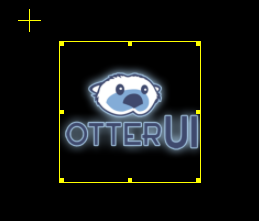

A view is a collection of related controls and animations, and are organized within a single scene.
To create a view, first a scene must be created and opened for edit. See the Scene tutorial for further information. This tutorial assumes that a scene has been opened for editing.
In the Scene Hierarchy view, right-click and hit Create View. A new view will be created with a default name.
You can also rename or delete the view by selecting and right-clicking on it in the Scene Hierarchy.
Once a view has been created, to edit it simply select it in the scene hierarchy. Only one view can be edited at a time.
In the top-left corner of the Scene View (see Overview), select the appropriate resolution to preview your view.
To add a control to the view, simply drag-and-drop an item from the Controls View onto the opened Scene itself. The control will be created at the dropped location and onto the currently selected view.
To manipulate a control (moving, resizing, etc), first select the control itself. Once selected, a yellow selection box will surround the control to indicate the control's bounds and center:

The control selection box consists of the following:
In the above control, the center is to the top left of the control itself and offset slightly from its bounds. The center also indicates the current position of the control itself.
To move the control, click and drag within the large selection box. This will move the entire control to the desired location.
To resize the control, click and drag on any one of the individual resize grips. Note - resizing the control does not effect its center and therefore does not move the control's position!
Control rotation is achieved by typing a rotation angle in the Properties View when the control is selected, under the Layout field.
Created with the Personal Edition of HelpNDoc: Single source CHM, PDF, DOC and HTML Help creation